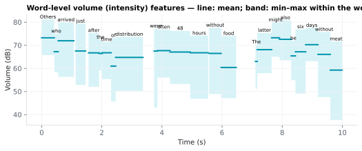

On this page
6.1.20Word-level volume (intensity) features
Five per-word summary statistics of the intensity contour (loudness in dB SPL), computed within each word's MFA-aligned acoustic window (Onset, End).
6.1.20.1What it is
Five per-word summary statistics of the intensity contour (loudness
in dB SPL), computed within each word's MFA-aligned acoustic window
(Onset, End):
| Column | Statistic | Notes |
|---|---|---|
Volume_Mean |
Arithmetic mean intensity (dB SPL) inside the word | Primary loudness summary. |
Volume_Min |
5th-percentile intensity | Robust min — avoids transient silence frames. |
Volume_Max |
95th-percentile intensity | Robust max — avoids transient clipping frames. |
Volume_Std |
Standard deviation of intensity | Within-word loudness variability. |
Volume_Delta |
Volume_Mean[i] − Volume_Mean[j], j = most recent earlier word with a Volume_Mean |
Word-to-word loudness change; PUNCT/unaligned rows are skipped (like Word_Gap). NaN for the first aligned word. |
Units are dB SPL as Praat returns them. For clean studio
recordings, Volume_Mean typically lies in 50–75 dB SPL. Values way outside this range usually indicate
the audio was not normalized to Praat's expected reference, not a bug
in the extractor.
Words with no aligned acoustic interval (failed alignment, PUNCT) get
NaN for all five columns.
6.1.20.2See it

6.1.20.3In your output
| token | Volume_Mean | Volume_Min | Volume_Max | Volume_Std | Volume_Delta |
|---|---|---|---|---|---|
| Others | 73.25 | 65.76 | 81.15 | 4.812 | |
| who | 67.26 | 58.31 | 75.02 | 7.419 | -5.99 |
| arrived | 71.98 | 56.36 | 79.9 | 8.072 | 4.715 |
| just | 67.56 | 52.87 | 79.39 | 8.623 | -4.417 |
| after | 66.74 | 52.09 | 75.34 | 7.87 | -0.824 |
| the | 66.46 | 59.18 | 72.36 | 4.859 | -0.2763 |
| time | 66.79 | 55.39 | 71.41 | 5.443 | 0.3273 |
| of | 61 | 45.69 | 73.16 | 10.52 | -5.783 |
| distribution | 64.78 | 50.28 | 73.67 | 7.478 | 3.774 |
| were | 67.51 | 43.07 | 77.23 | 12.73 | 2.728 |
| often | 67.69 | 56.04 | 76.79 | 6.799 | 0.1882 |
| 48 | 67.1 | 53.31 | 76.19 | 8.306 | -0.5937 |
6.1.20.4MATLAB
% Load the word-level table (one row per word)
T = readtable('word/LJ002-0321_features.csv', 'TextType', 'string');
T.Properties.VariableNames % every column in the file
head(T(:, {'token', 'Volume_Mean', 'Volume_Min', 'Volume_Max', 'Volume_Std', 'Volume_Delta'}), 10) % this feature's columns (first rows)
% Plot
ok = ~isnan(T.Volume_Mean);
plot([T.Onset(ok) T.End(ok)]', [T.Volume_Mean(ok) T.Volume_Mean(ok)]', 'LineWidth', 2)
xlabel('Time (s)'); ylabel('Volume_Mean')
6.1.20.5Math / implementation details
- Intensity is estimated by Praat as RMS amplitude smoothed over a short window, converted to dB SPL (Boersma 2018).
- Aggregates are computed over non-NaN frames inside [Onset, End).
Volume_Min/Volume_Maxuse the 5th and 95th percentiles for the same robustness reasons as the pitch column.- Single-frame words:
Volume_Std = 0, min/max/mean all collapse to the same value.
6.1.20.6In the code
Source: sensi/extractors/prosody.py:add_word_prosody. Shared
forward-pass implementation as pitch — the same
loop slices and aggregates both contours per word. Volume_Delta is
Volume_Mean − Volume_Mean.ffill().shift(1), i.e. measured back to the
most recent word with a value, as for Pitch_Delta.
The two extractor columns are populated together in
add_word_prosody; enabling either set of toggles (or any single one)
triggers the same prosody stage. Per-column toggles control output
emission, not compute.
Why:
- Robust percentiles for min/max — same reasoning as
Pitch_Min/Max. - No reference-level normalization — the extractor reports dB SPL directly from Praat without an audio-level normalization pass. The assumption is that input audio is already loudness-normalized upstream of SensiExtractor; for cross-stimulus volume comparisons, perform your own normalization before invoking the extractor.
6.1.20.7Library
import parselmouth, numpy as np
snd = parselmouth.Sound("stimulus.wav")
intensity = snd.to_intensity(minimum_pitch=75)
db = intensity.values[0] # dB SPL per frame
times = intensity.xs()
# Per-word slice: db_in_word = db[(times >= onset) & (times < end)]
6.1.20.8EEG rationale
Intensity is the second primary acoustic carrier of prosodic prominence (along with pitch). For naturalistic-EEG analyses:
- N100 amplitude scales linearly with sound pressure level in controlled auditory paradigms (Zelger 2024) — the loudness dependence of the early auditory evoked response. At the word level in continuous speech, louder words inherit this scaling as a direct acoustic-energy effect on the N100 (and the subsequent P200 in the N1–P2 complex).
- Intensity is one of the acoustic cues to perceived prominence, alongside F0 (pitch) and phone-rate, in cross-linguistic prominence ratings (Cole 2019).
Volume_Deltacaptures loudness contours across the discourse — useful as a continuous regressor for amplitude-driven prediction models.
Volume_Mean is also a standard nuisance regressor: it is partly
confounded with both pitch and word duration
(acoustic_durations.md), so analyses isolating
higher-order linguistic effects typically include all three.
6.1.20.9Papers
Intensity / loudness in speech processing:
- Boersma 2018 Boersma & Weenink. Praat: doing phonetics by computer. praat.org — Praat reference; intensity estimation (
To Intensity). - Zelger 2024 Zelger, Seebacher, Graf, Rossi. Is it too loud? Ask your brain! NeuroImage 299, 120796. doi:10.1016/j.neuroimage.2024.120796 — EEG study of 27 normal-hearing adults presented with 500 ms noise stimuli at 55–95 dB; N100 amplitude shows a linear dependency on sound level and on subjective loudness rating.
- Cole 2019 Cole, Hualde, Smith, Eager, Mahrt, Napoleão de Souza. Sound, structure and meaning: The bases of prominence ratings in English, French and Spanish. J. Phonetics 75, 113–147. doi:10.1016/j.wocn.2019.05.002 — listener prominence ratings in three languages are jointly driven by F0, intensity, and phone-rate; intensity is one of the converging acoustic cues to perceived prominence.